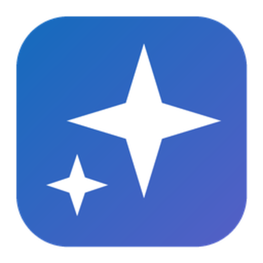
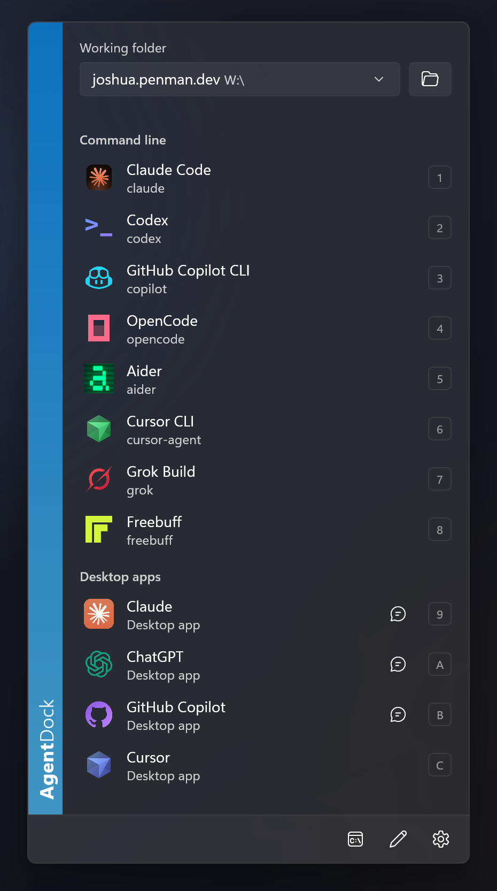
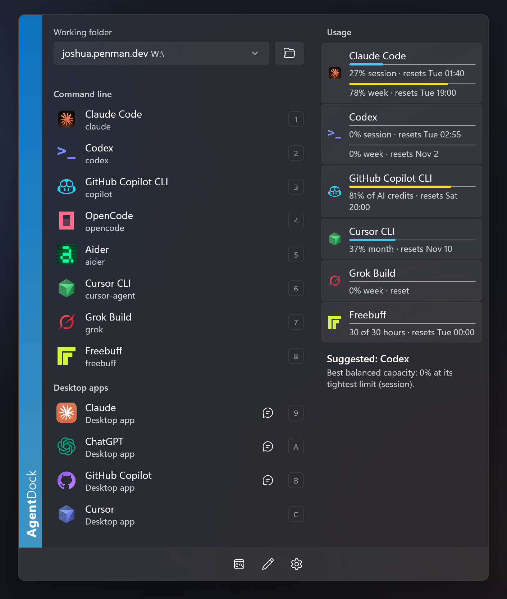
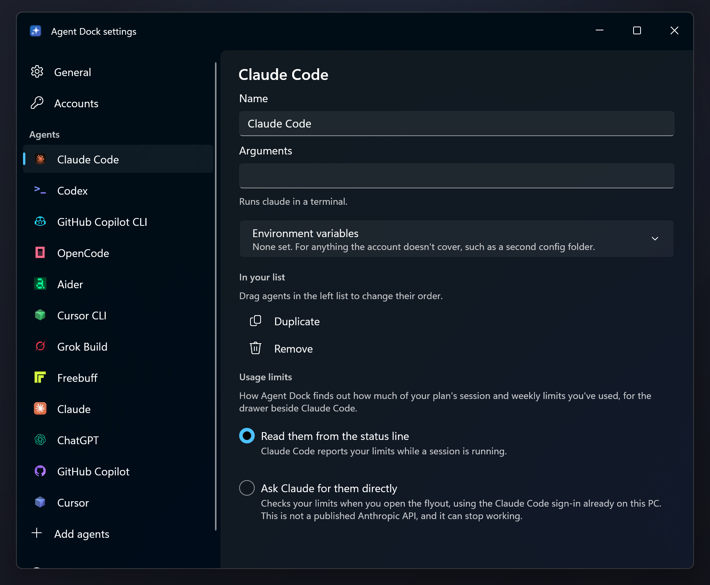

project
Agent Dock
Every AI agent on your PC, one click from the taskbar.
There are now more AI coding agents than there are ways to remember how to start them. Claude Code is one command, Codex another; Copilot CLI wants a working folder, Cursor wants a window, and each one keeps its own sign-in, its own configuration and its own idea of how much of your plan is left. Alt-tabbing to a terminal to type the right incantation gets old quickly.
Agent Dock puts them all behind one pinned taskbar icon. Click it and a small acrylic flyout opens above the taskbar, already laid out: the folder you’re working in, then your command line agents and desktop apps, with the number or letter key that launches each one. Pick an agent and it opens in Windows Terminal in that folder — or, for a desktop app, just opens. Presets pin an agent to a folder you keep coming back to, and the taskbar icon’s right-click menu can launch an agent straight into the last folder without opening the flyout at all.
It also answers the question you usually only ask after starting something: how much is left? Where an agent reports plan usage — Claude Code, Codex, GitHub Copilot, Cursor, Kiro, Grok Build and Freebuff among them — the drawer beside the list shows session and weekly bars, reset times and any API balance. A usage overview lists every agent at once and suggests whichever one currently has the most headroom, with a reason. Accounts and API keys are added once and handed to whichever agents can use them, and per-agent environment variables cover the rest, so a work and a personal Claude Code can live side by side.
Under the hood it’s a WinUI 3 application on .NET 10, unpackaged and self-contained, compiled with Native AOT. It starts with Windows and stays in the background with the flyout already built and rendered once off-screen. Clicking the pinned icon starts a second copy that forwards a single line over a named pipe and exits in milliseconds, so the panel is simply there. There is no admin prompt, no runtime to install, and it updates itself.



Taskbar, not Alt+Tab
Click the pin and the flyout is already waiting. Pick with the mouse, the arrow keys and Enter, or a single number or letter.
Presets
An agent tied to a folder, at the top of the flyout and in the jump list. Presets always open in their own folder, whatever the current one is.
Usage at a glance
Session and weekly limits, reset times and API balances for the agents that publish them — plus a suggestion when one plan is clearly the better choice.
Accounts in one place
Add an API key once and hand it to every agent that can use it. Duplicate an agent for a second account, with its own config folder and environment.
Finds what you have
Scans for the agents it knows, picks up desktop apps from the Start menu, and accepts any custom command line. Drag to reorder; hide what isn’t installed.
Native, not Electron
WinUI 3 with Windows’ own acrylic, light and dark mode and accent colour. Self-contained, Native AOT, no runtime and no admin prompt.
Drag the top edge to make the list taller or the right edge to make it wider; past a certain width the rows wrap into two columns. The taskbar icon can be swapped for one of several built-in designs, and agents can be renamed, duplicated, reordered or given their own arguments. It all lives in plain JSON under %APPDATA%\AgentDock if you’d rather edit it by hand.
Download the setup executable from the latest release and run it. It installs for your user only — no administrator prompt — and adds Agent Dock to the Start menu. When it asks, right-click its taskbar icon and choose Pin to taskbar; Windows doesn’t let an application pin itself, so that one step is yours. After that, clicking the pin is all it takes.
Windows 11 — x64 or ARM64. The Windows App SDK is bundled; nothing else needs installing. A portable zip is on the same release page.
Or build it yourself with the .NET 10 SDK. Native AOT publishing also wants the MSVC linker from Visual Studio’s Desktop development with C++ workload; set <PublishAot>false</PublishAot> to skip it.
dotnet publish -c Release -r win-x64 -o C:\Tools\AgentDock
Read the README
Agent discovery, presets, usage sources, accounts, configuration and the full build requirements.
All releases
Setup executables and portable zips for x64 and ARM64, with release notes for every version.